Elements - Icons
Rustic coloured woodcuts, with a generous clearing for making things.
Chapter views
Legal checkpoint entries, captured at phone size. The original Elements story remains available separately.
All 201 items
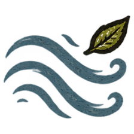
Air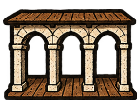
Arcade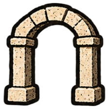
Arch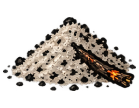
Ash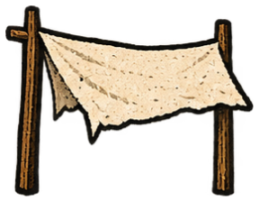
Awning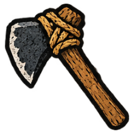
Axe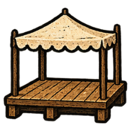
Bandstand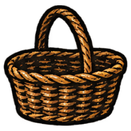
Basket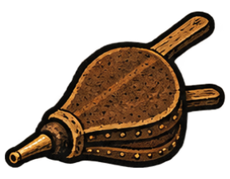
Bellows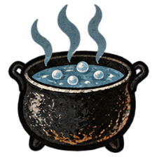
Boiled water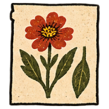
Botanical drawing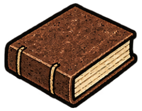
Bound book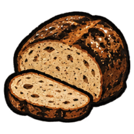
Bread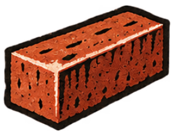
Brick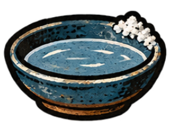
Brine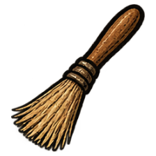
Brush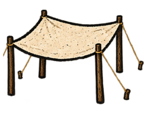
Canopy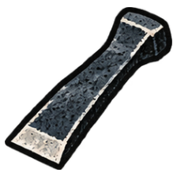
Carving tool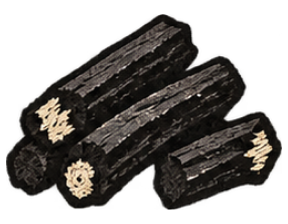
CharcoalCiderCider bottleCider jarClayClay jarClear collector with level marksClockClockworkClothCollected rain levelCovered clay jarCovered preservesCovered water jarCurtainDockDoughDried fruitDrinking-water bowlDrumDrying rackDyeDyed clothDyed threadEarthExhibition catalogueFeastFeast tableFestival bannerFilled reservoirFilled water jarFilter bedFiltered waterFireFired glazed bowlFired glazed jarFishFlatbreadFloatFloating lanternFlourFlour sackFlowersFluteFootbridgeForgeFormed clay bowlFruitFruit compoteFruit crockFruit juiceGalleryGlassGlass bottleGlass slideGlaze mixtureGrainGrain binGrain millGreenhouseHandcartHearthHerbariumHingeHollow pipeHollow tubeHourglassHouseIllustrated floraInkInked printing blockIronIron oreIron-handled cooking potIrrigated gardenIrrigation channelJamJar lidKilnLanternLeaf studyLensLetterLighthouseLoomLyeMagnifierMailboatMicroscopeMill gearingMillstoneMooring buoyMosaicMosaic piecesMounted telescopeNailsNetOil lampOil-bearing seedsOil-soaked fiber wickOil-wick torchPaintPaperPaper lanternPaper lantern framePaper pulpPatterned clothPendulumPickaxePickle jarPicklesPicnic basketPicturePicture bookPier postPlanksPlantPlant fiberPlatformPond life studyPond slidePond waterPorridgePreserve jarPressed plant specimenPrinted invitationsPrinting blockPuppetPuppet theatreRaftRainRain recordReservoirReturn boats: 09:00 · 10:00 · 11:00Risen doughRopeSackSailSailboatSaltSandSawSeed oilSeedlingsSleeping matSmokeSmoked fishSoapStageStar chartStoneStone hammerStoveSupported gardenTableTelescopeThreadTileTiled tableTowerTrellisTripodVinegarWash stationWashstandWatch lampWaterWater channelWater filterWaterwheelWaterwheel with jarsWeather bookWeather recordWeighted seed pressWheelWheelsetWild starterWind recordWindowWindsockWoodWooden chestWooden gearFixed hotspots in their scenery
Eight locations across nine chapter appearances. Each location is part of the painted background; the hover outline shows its transparent hit area.
Chapter 6: Warm cellarChapter 8: Kiln yardChapter 9: Iron quarryChapter 11: Harbour headlandChapter 15: Iron quarryChapter 19: Mill pondChapter 22: Tidal shoreChapter 25: Kitchen hearthChapter 31: Gathering landing Completed floating-lantern placement
Prompts, scene continuity and bounded review evidence are in the production notes.